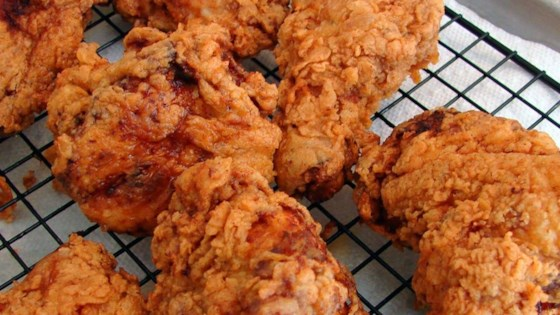

<!DOCTYPE html>
<html>
<head>

	<meta charset="utf-8">
	<meta http-equiv="X-UA-Compatible" content="IE=edge">
	<title>Title goes here</title>
	<meta name="description" content="">
	
	<!-- Enable responsive layouts; tell browsers not to shrink pages to fit small screens -->
	<meta name="viewport" content="width=device-width, initial-scale=1">

	<!-- Load styles -->
	<!-- For production, combine all of the stylesheets -->
	<link rel="stylesheet" href="css/sitewide.css">
	
	<!-- pull in webfonts -->
	<link href="https://fonts.googleapis.com/css?family=Source+Sans+Pro" rel="stylesheet">

</head>
<style>

<body>

	<!-- Page content goes inside the container -->
	<!-- In general, you should have only one container per page. -->
	<div class="container">

		<h1>Crispy BBQ Buttermilk Oven Fried Chicken</h1>
		<h2> By Tyson Hicks</h2>
		


		<h3><strong>Ingredients</strong><br><em>for 4 servings</em></br></h3>
		
		<ul>
			<li>3 boneless, skinless, chicken breast</li>
			<li>1 cupelow fat buttermilk</li>
			<li>1/4 cup of BBQ sauce</li>
			<li>1 cup of panko breadcrumbs</li>
			<li>1 cup of all purpose flour</li>
			<li>1/2 teaspoon of salt</li>
			<li>1/4 teaspoon of pepper</li>
			<li>1 teaspoon of paprika</li>
			<li>1/2 teaspoon of seasoning salt</li>
			<li>3 tablespoons of cooking oil</li>
		</ul>

		<h3><stong>Preparation</strong></h3>

		<ol>
			<li>On a cutting board, slice each chickeen breast into strips.</li>
			<li>In a resealable bag combine the buttermilk, BBQ sauce, and chicken. Shake back to mix the ingredients. Refrigerate for at least 2 hours.</li>
			<li>Preheat oven for 425°F</li>
			<li>In a dish, add the panko, flour, salt, pepper, paprika, and seasoning salt and mix to combine.</li>
			<li>Dip the chicken strips into the panko mixture until fully coated.</li>
			<li>Line a baking sheet with parchment paper and cooking oil.</li>
			<li>Put the chicken on the baking sheet and bake for 10 minutes. Flip the chicken over, and bake for 10 more minutes. Broil for 2-3 minutes for extra crispiness.</li>
		</ol>


	</div><!-- end container -->
	
</body>

</html>
